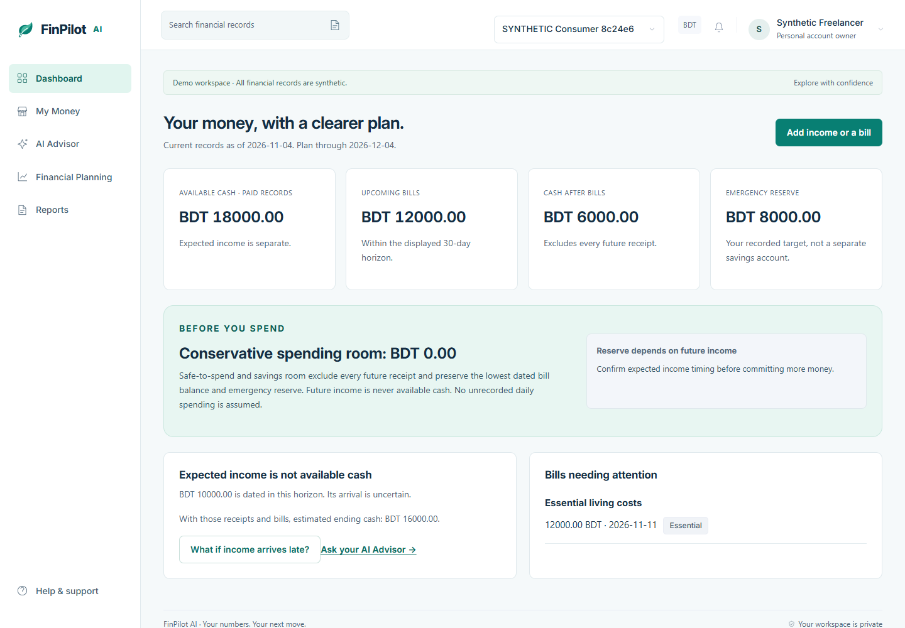
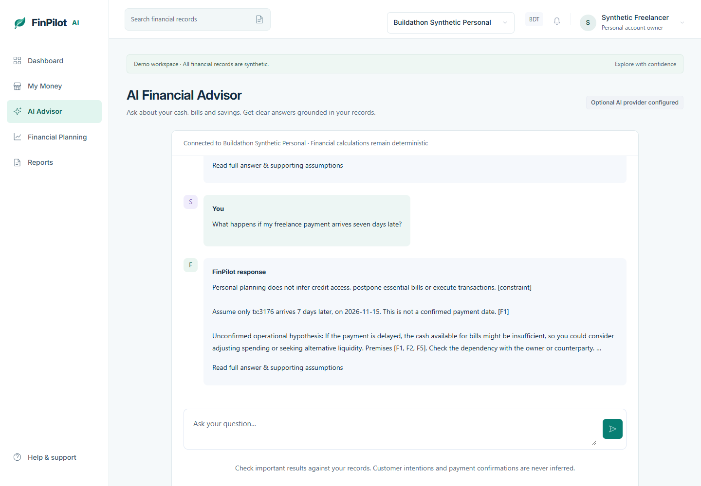
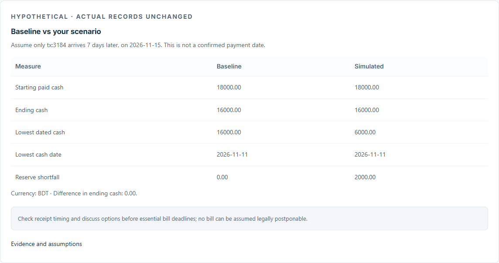

For students, freelancers and individual sellers, income dates change. Essential bill deadlines don't.
“Can I spend this now — and still protect my emergency reserve?”
Fully synthetic example, not customer data or a survey statistic.
Personal Mode: a short setup for cash, expected income, essential bills and your reserve.
A conservative spending buffer: future receipts are excluded until they actually arrive.
Private by workspace: personal finances and the existing Business Mode stay separate.
No bank connection required
Actual application screenshot · marked synthetic workspace
Django + PostgreSQL · templates + responsive CSS · Groq structured outputs
The AI cannot create financial figures, approve loans or execute a transaction. Provider failures return truthful deterministic analysis.

Real Groq execution verified with synthetic records; screenshot from the working app.
Solo Participant · Creator of FinPilot AI
Presented by Md. Meherab Hossain Talukder · Solo Participant
Dedicated consumer onboarding and Personal Mode.
Conservative spending and savings calculations.
Four personal scenarios and consumer-grounded AI context.
Account-free, stateless synthetic demo and report export.
Existing SME calculations, authentication, Groq transport and export safeguards were reused.
Delay the synthetic BDT 10,000 income by seven days:
Timing-aware planning exposes a risk that a monthly total can miss. Every saved scenario stays hypothetical.

Actual screenshot · synthetic baseline versus simulated outcome